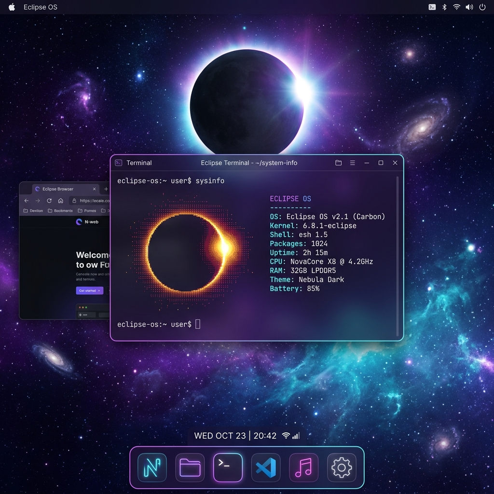

Eclipse OS es un núcleo de sistema operativo experimental basado en Zircon, escrito en Rust seguro. Busca ejecutar de forma nativa aplicaciones y entornos gráficos de Linux, arrancando en metal real o como Library OS (libos) en espacio de usuario.

Construimos sobre la arquitectura del micronúcleo Zircon de Google en Rust seguro, manteniendo el núcleo mínimo y aislando los servicios en el espacio de usuario.
Desarrollado en Rust seguro para eliminar errores de desbordamiento de búfer y desreferencia de punteros en tiempo de compilación directos en la capa del núcleo.
Aunque actualmente arranca en terminal, planeamos dar soporte a todas las interfaces gráficas y escritorios de Linux en el futuro, manteniendo la compatibilidad y el buen gusto.
Incluye un sistema de archivos inicial con utilidades BusyBox y bibliotecas C Musl, iniciando directamente una shell de comandos al arrancar.
Framework de controladores en espacio de usuario para GPUs NVIDIA, que ofrece salida de pantalla básica y aceleración sin comprometer la estabilidad del núcleo.
Eclipse OS se ejecuta de forma activa en emuladores y ya se ha probado con éxito arrancando en metal real en el ordenador personal de su desarrollador.
Eclipse OS nació como una evolución del micronúcleo zCore. Creado por Pryan (Moebius) y un grupo de colaboradores, el proyecto toma el diseño del micronúcleo Zircon de Google en Rust seguro para transformarlo en un sistema completo. Nuestro compromiso es dar soporte a todo el entorno Linux, manteniendo la compatibilidad y el buen gusto.
Modifica el proceso inicial (init) de Eclipse OS editando su línea de comandos de arranque.
Esta combinación está completamente soportada. El núcleo de Eclipse OS iniciará correctamente y cargará los controladores de red Intel y los gráficos QEMU VGA en el espacio de usuario.
Medio de instalación arrancable. Las imágenes precompiladas estarán disponibles una vez el sistema alcance su fase estable.
Imagen de disco lista para QEMU o VirtualBox. Las descargas de imágenes VM preconstruidas estarán disponibles próximamente.
Obtén el repositorio de código. Actualmente, compilar desde las fuentes es la vía principal para probar Eclipse OS.
No. Eclipse OS es un micronúcleo basado en Zircon reimplementado en Rust, iniciado a partir del proyecto zCore. No está basado en Linux, pero incluye capas de compatibilidad para cargar y ejecutar binarios ELF de Linux nativos.
Sí, Eclipse OS cuenta con soporte nativo para ejecutar binarios ELF de Linux compilados estáticamente o usando musl-libc. Las utilidades de consola como BusyBox funcionan por completo, y las apps gráficas están en desarrollo.
Para el modo bare-metal o emulación, necesitas un procesador x86_64 o una placa RISC-V compatible, y al menos 512 MB de RAM. Cuenta con soporte experimental para tarjetas ethernet Intel e1000/igb y gráficos NVIDIA.
Puedes colaborar aportando código, contribuyendo controladores de hardware para el micronúcleo, mejorando la compatibilidad POSIX o ayudando con la documentación en GitHub.